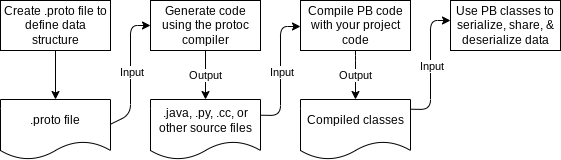

3. Installation
3.2. Protobuf Runtime
-
安装Protobuf Compiler
protoc --java_out=${OUTPUT_DIR} path/to/your/proto/file<dependency>
<groupId>com.google.protobuf</groupId>
<artifactId>protobuf-java</artifactId>
</dependency>| Entry | Memo |
|---|---|
protobuf-java |
Protocol Buffer Java核心库， |
protobuf-java-util |
Protocol Buffer Java工具类，如Json支持 |
4. Solve Problem
-
Protocol Buffer为高达几兆的类型化，结构化数据包提供序列化格式，
此格式适用于短暂的(ephemeral)网络流量和长期的(long-term)数据存储，
可用新信息扩展Protocol Buffer，而不会使现有数据无效或需要更新代码； -
Protocol Buffer是谷歌最常用的数据格式，广泛(extensively)用于服务器间通信
及磁盘上数据的归档(archival)存储，Protocol Buffer消息(message)和
服务(service)由工程师编写(engineer-authored)的proto文件描述，如：
message Person {
optional string name = 1;
optional int32 id = 2;
optional string email = 3;
}-
proto compiler在proto文件构建时被调用，以生成各种编程语言的代码，从而操作
相应的Protocol Buffer，每个生成的类都包含每个字段的简单访问器accessor和方法；
用于将整个结构序列化到原始字节和从原始字节解析整个结构：
Person elf = Person.newBuilder()
.setId(1234)
.setName("Elf")
.setEmail("elf@email.com")
.build();
output = new FileOutputStream(args[0]);
elf.writeTo(output);-
Protocol Buffer允许不中断现有服务时，无缝支持对任何
Protocol Buffer的更改，包括添加新字段和删除现有字段
5. Cross Language Compatibility
-
用任何支持的编程语言编写的代码都可读取相同的消息，可让A平台Java程序
从某软件系统捕获数据，根据proto定义对其序列化，然后在B平台运行的
单独Python应用中从序列化的数据中提取特定值； -
Protocol Buffer Compiler支持的语言列表：
6. Cross Project Support
-
通过在位于特定项目代码库之外的proto文件中定义消息类型，可跨项目使用Protocol Buffer，
若定义的消息类型或枚举预计将在直属团队之外广泛使用，则可将它们放在自己的文件中，而无需依赖项；
7. Updating
-
Updating Proto Definition Without Updating Code
-
软件产品一般考虑向后兼容(backward compatible)，向前兼容不太常见
(less common for forward compatible)； -
只要在更新proto定义时遵循简单做法，旧代码即可毫无问题的读取新消息，
忽略任何新添加的字段，对旧代码，已删除的字段将具有默认值，而已删除的重复字段将为空； -
新代码也将透明的(transparently)读取旧消息，新字段将不会出现在旧消息中，
此场景下，Protocol Buffer提供合理的(reasonable)默认值；
8. When Not
-
Protocol Buffer倾向于假设整个消息(entire message)可一次加载到内存中，
且不大于对象图(object graph)，对超过几兆的数据，请考虑不同的解决方案； -
当处理较大数据时，因序列化的副本，实际上会得到多个数据副本，可能导致惊人峰值的内存使用量；
-
当Protocol Buffer被序列化时，相同的数据可有许多不同的二进制序列化，
若不完全解析(parse)此两条消息，就无法比较它们是否相等(equality)； -
若消息Message未被压缩，虽消息可像任何其它文件，可被zipped或gzipped，
但像jpeg或png使用的特殊用途(special-purpose)压缩算法将为
适当类型(appropriate type)的数据生成更小的文件； -
Protocol Buffer message are less than maximally efficient in
both size and speed for many scientific and engineering use
that involve large，multi-dimensional array of floating point number； -
对涉及浮点数的大的多维数组的许多科学和工程用途来说，Protocol Buffer
消息在大小和速度上都低于最大效率，对这些应用程序，FITS和类似格式的开销较小；
https://en.wikipedia.org/wiki/FITS -
Protocol Buffer消息本身并不自我描述(inherently self-describe)其数据，
但有完全反射的模式fully reflective schema，以实现自我描述，
即若不访问相应的proto文件，就无法完全解释fully interpret；
9. Use Protocol Buffer

-
Protocol Buffer生成的代码提供从文件和流(stream)中检索(retrieve)数据、
从数据中提取单个值、检查数据是否存在、将数据序列化回文件或流以及其他有用功能的实用方法； -
extract individual value from data，check if data exist，
serialize data back to file or stream and other useful function；
message Person {
optional string name = 1;
optional int32 id = 2;
optional string email = 3;
}Person elf = Person.newBuilder()
.setId(18)
.setName("Elf")
.setEmail("elf@email.com")
.build();
output = new FileOutputStream(args[0]);
elf.writeTo(output);10. Definition Syntax
-
定义proto文件时，我们可指定字段(field)是可选的(optional)或重复的(repeated)，
或在proto3中将其设置为默认的隐式存在(implicit presence)； -
将字段设置为必需(required)字段，在proto3中不存在，在proto2也强烈不鼓励；
-
设置字段的可选性(optionality)或可重复性(repeatability)后，可指定数据类型，
Protocol Buffer支持常用基本数据类型，如integer，boolean，float，
具体可参考：https://protobuf.dev/programming-guides/proto3/#scalar[Scalar Value Type,,window="_blank"]] -
字段也可以是如下类型：
| Type | |
|---|---|
message type |
可嵌套定义，如重复的数据集(repeating data set) |
enum type |
可指定一组可供选择的值 |
oneof type |
当消息有许多可选字段，且最多同时设置一个字段时，可使用此 |
map type |
可将键值对添加到定义中 |
-
在proto2中，消息可允许扩展(extension)定义消息本身外的字段，
如protobuf库的内部消息模式(internal message schema)
允许扩展自定义的，特定于用途(usage-specific)的选项； -
当设定可选性和字段类型后，可为字段选择名称，字段名称需谨记：
-
在生产中使用字段名称后，更改字段名称变得很困难，甚至不可能；
-
字段名称不能包含短划线(dash)，具体更多语法，请参考消息和字段名称：
https://protobuf.dev/programming-guides/style/#message-field-names
-
-
重复字段使用复数(pluralize)名称，
-
为字段指定名称后，需为字段指定字段编号，字段编号不能重新调整用途(repurposed)
或重复使用(reused)，若删除字段，应保留(reserve)其字段编号，
以防(prevent)有人意外(accidentally)重复使用该编号；
11. Additional Data Type Support
-
Protocol Buffer支持众多scalar value type，包括可变长度编码
(variable-length encoding)和固定大小(fixed size)的整数(integer)； -
可通过定义消息(message)来创建自定义符合数据类型
(composite data type)，这些消息本身可分配给字段的数据类型； -
除简单值类型和符合值类型外，还发布了集中常见类型：
https://protobuf.dev/programming-guides/dos-donts/#common
| Type | Memo | Url |
|---|---|---|
Duration |
signed and fixed-length span of time，如42秒 |
|
Timestamp |
point in time independent of any time zone |
|
interval |
time interval independent of time zone or calendar， |
|
date |
whole calendar date，如2023-09-19 |
|
dayofweek |
day of week，如Monday |
|
timeofday |
time of day，如：10:42:23 |
|
latlng |
latitude longitude pair |
|
money |
money with currency type，如99 CNY |
|
postal_address |
postal address |
|
color |
rgba color space |
|
month |
month of year，如April |